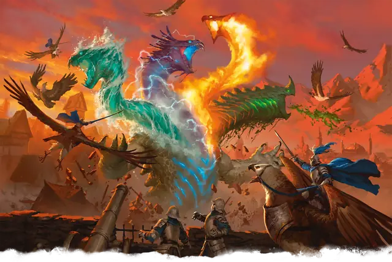

Стихийный катаклизм
Elemental Cataclysm
Громадный Элементаль (Титан), Хаотичный Нейтральный

Класс Защиты 20 Инициатива +18 (28)
Хиты 370 (20к20 + 160)
Скорость 60 футов, Плавания 80 футов, Полёта 80 футов (парит), Копания 60 футов
| мод | спас | ||
|---|---|---|---|
| СИЛ | 26 | +8 | +8 |
| ЛОВ | 19 | +4 | +11 |
| ТЕЛ | 27 | +8 | +15 |
| мод | спас | ||
|---|---|---|---|
| ИНТ | 9 | −1 | −1 |
| МДР | 14 | +2 | +9 |
| ХАР | 9 | −1 | +6 |
Иммунитеты Звук, Кислота, Огонь, Холод, Электричество, Яд; Бессознательный, Испуганный, Истощение, Оглохший, Окаменевший, Опрокинутый, Опутанный, Ослеплённый, Отравленный, Очарованный, Ошеломлённый, Парализованный, Схваченный
Чувства пассивное Восприятие 12, Истинное зрение 150 футов
Языки Первичный
Опасность 22 (41 000 опыта; БВ +7)
Особенности
Скольжение сквозь твердь. Катаклизм может перемещаться сквозь немагические необработанные землю и камень. При этом катаклизм не тревожит материю, через которую перемещается.
Легендарное сопротивление (4/день). Если катаклизм проваливает спасбросок, он вместо этого может в нём преуспеть.
Осадное чудовище. Катаклизм наносит двойной урон объектам и постройкам.
Действия
Мультиатака. Катаклизм совершает две атаки Стихийным выбросом.
Стихийный выброс. Бросок рукопашной или дальнобойной атаки: +15, досягаемость 30 фт. или дистанция 150 фт. Попадание: 25 (5к6 + 8) урона выбранного катаклизмом типа: Звук, Кислота, Огонь, Холод или Электричество.
Катастрофическое событие (Перезарядка 4–6). Катаклизм создаёт один из следующих эффектов, выбирая случайным образом; бросьте 1к4:
1. Неотступное пламя. Спасбросок Ловкости: Сл 23, каждое существо в 60-футовой Сфере с центром в видимой катаклизмом точке в 150 футах. Провал: 45 (13к6) урона Огнём. Успех: Только половина урона. Провал или успех: Цель начинает гореть.
2. Леденящие волны. Спасбросок Силы: Сл 23, каждое существо в 90-футовом Конусе. Провал: 22 (5к8) Дробящего урона плюс 22 (5к8) урона Холодом, и цель Опрокидывается. Успех: Только половина урона. Провал или успех: Скорость цели снижается до 0 до конца её следующего хода.
3. Яростная буря. В области 60-футовой Сферы с центром в видимой катаклизмом в пределах 150 футов от него точке начинается буря. Буря длится в течение 1 минуты или пока катаклизм снова не использует Катастрофическое событие. Существа, полностью находящиеся в пределах этой области, Ослеплены и Оглушены, а также не могут сотворять заклинания с Вербальным компонентом. Спасбросок Ловкости: Сл 23, каждое существо, впервые за ход входящее в область бури или начинающее там свой ход. Провал: 18 (4к8) урона Электричеством плюс 18 (4к8) урона Звуком. Успех: Только половина урона.
4. Поглощающие недра. Спасбросок Силы: Сл 23, каждое существо в 90-футовом Кубе, исходящего из точки на земле в 150 футах. Провал: 18 (4к8) Дробящего урона плюс 18 (4к8) урона Кислотой, и цель Опрокидывается и погребается под камнями и землёй. Погребённая цель также Опутана, имеет Полное укрытие и задыхается. Погребённое существо или другое существо в пределах 5 футов от него может действием совершить проверку Силы (Атлетика) Сл 18, чтобы извлечь погребённое существо. Успех: Только половина урона.
Власть над погодой. Катаклизм сотворяет заклинание Власть над погодой, не нуждаясь в компонентах (заклинательная характеристика — Телосложение).
Легендарные действия
У этого существа есть 3 использования Легендарных действий; оно может немедленно после окончания хода другого существа потратить одно использование, чтобы совершить одно из следующих действий. Существо восполняет все потраченные использования в начале каждого своего хода.
Извержение. Катаклизм совершает одну атаку Стихийным выбросом.
Грохочущее движение. Катаклизм перемещается на расстояние вплоть до своей Скорости, Скорости полёта или Скорости плавания, не Провоцируя атак. Каждое существо, оказавшееся в пределах 5 футов от катаклизма во время этого перемещения, подвергается следующему эффекту: Спасбросок Телосложения: Сл 23. Провал: Цель Опрокидывается. Провал или успех: Катаклизм не может совершить это действие повторно до начала своего следующего хода.
Бонус мастерства +7
Среда обитания Стихийный Хаос
Сокровища Отсутствуют
Стихийный катаклизм
Начало и конец эпох
За границами Стихийных планов, в Стихийном Хаосе, без конца сталкиваются первозданные силы. В безбрежной круговерти этого царства бушуют стихийные катаклизмы — сущности, рождённые из необузданной материи мультивселенной и пронизанные враждующими стихиями. Эти воплощения первородного конфликта уничтожают почти всё, с чем соприкасаются, но в оставленных ими руинах зреет семя нового творения.
Катаклизмы редко вырываются за пределы Стихийного Хаоса. Когда это случается, виной тому обычно становится разрыв планарной ткани или ритуал апокалиптических культистов. Явившись в миры Материального плана, катаклизмы пропахивают в земной коре полосы разрушения, меняя целые царства, — они бездумно крушат города и ввергают в смятение народы. Их неистовство не хаотично: катаклизмы ненавидят всё, что заметной раной ложится на природу, — будь то шахты, монументы, крепости или города, — но самую лютую ярость вызывают у них творения из металла и заводные механизмы. Сея разрушение, они испускают осуждающий вой и выкрикивают слова распада на языках Внутренних планов.
Остановить стихийный катаклизм почти невозможно. Те, кто встаёт против этой напасти, часто пытаются обратить вспять призвавший его ритуал, выманить его через планарный разлом или призвать другого титана в надежде, что один уничтожит другого. Эти кошмары оставляют за собой пепел, потопы, бури и развороченную землю. Но, когда бедствие отступает, земля проникается новой жизнью или вовсе меняет свой облик. Совершите бросок по таблице «Стихийные перемены» для вдохновения или решите сами, что рождается на месте разрушений.
Стихийные перемены
| 1к8 | После стихийного катаклизма остаётся… |
| 1 | Резкое повышение или понижение температуры. |
| 2 | Гигантский коралловый риф или грибной лес. |
| 3 | Бесконечный шторм или водоворот. |
| 4 | Проход в Подземье или портал на Стихийный план. |
| 5 | Популяция древних или давно вымерших животных. |
| 6 | Стремительно разрастающийся тропический лес. |
| 7 | Река в том месте, где её не бывало. |
| 8 | Вереница причудливых скальных образований. |